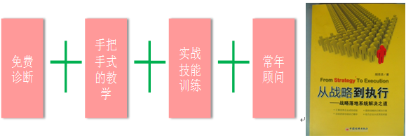

|
胡圣浩博士 课程中心相关电子文档七 |
您好，非常高兴地邀请您参加我公司举办的《中层干部管理技能提升训练》的实战特训营课程学习。该课程将系统解决您公司中层断层、后继乏力的问题，手把手式的为您公司打造中层团队，全面提升管理技能，免费的诊断方式为您透视企业问题，全面培养您团队的战斗力，提升公司业绩，常年的顾问服务为您保驾护航、警钟长鸣。
一、【课程特点】
二、 【课程背景】
作为一个中层干部，您是否会常常感到迷惑：
为什么我每天都陷身于具体事务而忙累不堪？
为什么我的下属总是不能胜任他的工作？
为什么我总是扮演消防员的角色，到处救火，分身乏术？
为什么我投入了那么多的时间，仍然达不到预期的绩效目标？
为什么……
今天的中层干部，正承受着前所未有的压力，上级希望自己执行到位，下级希望自己指挥得当，同级希望自己多多配合。一提到现状，很多人都会用“忙、乱、累、烦”来形容。
……
三、 【课程收益】
企业最缺的人才，永远是中层骨干，提升企业人才素质，快速复制中层骨干人才，培训是最直接最有效的途径。企业人才的职业化进程任重道远，尤其是中层、骨干员工的培训为培养企业的后备人才有着举足轻重的作用，提升企业经理人和员工团队的职业化素质才是企业核心竞争力的源泉。
1、 明确中层干部的角色定位和心态定位
2、 掌握管事的思路，机制，方法和工具
3、 掌握管人带队伍的思路，机制，方法和措施
4、 掌握结构化分解工作技能（WBS）
5、 掌握人才识别，培育下属，管理下属和团队，激励下属的方法和技巧
6、 打造团队执行力：通过团队的合力培训，全面提升团队领导力、执行力和进取精神；分享同行经验，凝聚行业知识。
四、 【课程对象】
本课程适用于公司中高层管理人员，董事长、总经理在适当时候也可参加。
五、 【课程时间及地点】
共3天2夜（也可与客户协商）
六、 【讲师简介】
胡圣浩，集团战略与集团管控资深实战管理专家，清华大学、中山大学、电子科技大学总裁班特聘教授，经济学博士，多家杂志特约撰稿人、特约研究员，中国总裁网、中国讲师网金牌讲师，近20年工作经验，曾在上海华彩咨询集团、用友集团等单位工作，任职咨询总监、高级合伙人和总经理。
发表著作：《从战略到执行》、《管理学原理》、《组织行为学原理与实务》、《市场营销》等专著5部，30余篇论文。
培训课程：主讲《从战略到执行——战略落地系统解决之道》、《战略转型与商业模式创新》、《集团战略规划》、《集团管控与组织能力打造》、《营销金手指》、《如何提升组织绩效》、《战略地图与平衡计分卡》等。
七、 【培训风格】
擅长以案例分析入手，循循善诱，旁征博引，深入浅出，诙谐幽默，能将深奥的战略管理课程讲解得通俗易懂且趣味横生，于谈笑间增长学员知识，于互动间增强学员能力；
擅长互动式培训、角色扮演、游戏活动等培训方式，能够深入浅出讲述企业本质，改善企业绩效，成就基业长青。
八、 【课程目录】
第一讲 “用心”理解战略性人力资源管理
一、什么是战略性人力资源管理
二、战略性人力资源管理6大特性
三、战略性人力资源管理关键点
四、战略性人力资源管理的核心内容？
五、战略性人力资源与人力资源管理有什么区别？
六、人力资源如何支持与服务公司战略发展
思考：人力资源管理的角色与功能如何转换？
第二讲 战略性人力资源管理体系建立与完善
第三讲 人力资源规划
一、什么是人力资源规划
二、人力资源战略规划的核心内容
三、人力资源数量规划和结构规划
四、人力资源素质提升规划
五、人力资源政策和任务规划
六、人力资源战略规划案例分享
第四讲 组织体系
一、组织结构的发展趋势
二、组织结构的设计原则
三、常见的组织模式介绍
四、如何设计母子公司管控体系
五、如何设计组织结构
六、如何设计职位体系
第五讲 任职资格体系
一、素质模型与任职资格体系
二、素质模型的建立流程与方法
三、如何建立基础任职资格
四、如何建立关键素质资格
五、如何建立工作行为标准
六、如何进行认证
七、认证结果的应用
八、任职资格咨询案例分享
第六讲 培训体系
一、如何构建3+1培训体系
二、培训管理机制和培训文化
三、基于素质模型进行课程规划
四、建立企业讲师体系
五、培训执行和培训评估
第七讲 目标绩效管理体系
一、理解第三代绩效管理的理念
二、绩效管理模型的九大因素
三、绩效指标的提取工具介绍
四、如何建立绩效指标词典
五、如何编制绩效考核表
六、平衡计分卡介绍与如何编制战略地图
七、绩效管理体系的推动方法论介绍
八、如何进行绩效沟通
九、如何消除绩效管理的五大障碍
第八讲 薪酬福利体系
一、薪酬福利体系管理概论
二、职位描述与职族体系规划
三、岗位价值评估模型的选择与评估
四、宽带薪酬体系的设计与套算
五、薪酬体系的维护和管理
六、薪酬咨询案例分享
第八讲 HR战略落地
一、像总裁一样思考
二、不断提升自己的能力
三、达到更高境界
四、HR战略落地的手段
| 逻辑严谨 | 抽丝剥笋 |
|---|---|
| 语言生动 | 深入浅出 |
| 注重体验 | 寓教于乐 |
| 结果导向 | 支持实操 |
| 亲力亲为亲身运用独创的管理方法,结合学员的实际情况,讲授自己做过的案例 | 启发学员多角度思考，促其开悟，极大地提升学员的工作成效和业绩(来自客户) |